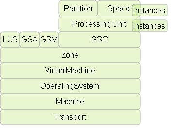

Section Summary: Simple API to monitor and administer GigaSpaces services and components.
Overview
The Admin API provides a way to administer and monitor all on GigaSpaces services and components using a simple API. The API provides information and the ability to operate on the currently running GigaSpaces Agents, GigaSpaces Managers, GigaSpaces Containers, Lookup Services, Processing Units and Spaces.
Before diving into the Admin API, here are some code examples showing how the Admin API can be used to display information on the of currently deployed services / components:
GSA
Admin admin = new AdminFactory().addGroup("myGroup").createAdmin(); // wait till things get discovered (you can also use specific waitFor) for (GridServiceAgent gsa : admin.getGridServiceAgents()) { System.out.println("GSA [" + gsa.getUid() + "] running on Machine [" + gsa.getMachine().getHostAddress()); for (AgentProcessDetails processDetails : gsa.getProcessesDetails()) { System.out.println(" -> Process [" + Arrays.toString(processDetails.getCommand()) + "]"); } }
GSM
Admin admin = new AdminFactory().addGroup("myGroup").createAdmin(); // wait till things get discovered (you can also use specific waitFor) for (GridServiceManager gsm : admin.getGridServiceManagers()) { System.out.println("GSM [" + gsm.getUid() + "] running on Machine " + gsm.getMachine().getHostAddress()); }
GSC
Admin admin = new AdminFactory().addGroup("myGroup").createAdmin(); // wait till things get discovered (you can also use specific waitFor) for (GridServiceContainer gsc : admin.getGridServiceContainers()) { System.out.println("GSC [" + gsc.getUid() + "] running on Machine " + gsc.getMachine().getHostAddress()); for (ProcessingUnitInstance puInstance : gsc) { System.out.println(" -> PU [" + puInstance.getName() + "][" + puInstance.getInstanceId() + "][" + puInstance.getBackupId() + "]"); } }
Processing Unit
Admin admin = new AdminFactory().addGroup("myGroup").createAdmin(); // wait till things get discovered (you can also use specific waitFor) for (ProcessingUnit processingUnit : admin.getProcessingUnits()) { System.out.println("Processing Unit: " + processingUnit.getName() + " status: " + processingUnit.getStatus()); if (processingUnit.isManaged()) { System.out.println(" -> Managing GSM: " + processingUnit.getManagingGridServiceManager().getUid()); } else { System.out.println(" -> Managing GSM: NA"); } for (GridServiceManager backupGSM : processingUnit.getBackupGridServiceManagers()) { System.out.println(" -> Backup GSM: " + backupGSM.getUid()); } for (ProcessingUnitInstance processingUnitInstance : processingUnit) { System.out.println(" [" + processingUnitInstance.getClusterInfo() + "] on GSC [" + processingUnitInstance.getGridServiceContainer().getUid() + "]"); if (processingUnitInstance.isEmbeddedSpaces()) { System.out.println(" -> Embedded Space [" + processingUnitInstance.getSpaceInstance().getUid() + "]"); } for (ServiceDetails details : processingUnitInstance) { System.out.println(" -> Service " + details); } } }
Space
for (Space space : admin.getSpaces()) { System.out.println("Space [" + space.getUid() + "] numberOfInstances [" + space.getNumberOfInstances() + "] numberOfbackups [" + space.getNumberOfBackups() + "]"); System.out.println(" Stats: Write [" + space.getStatistics().getWriteCount() + "/" + space.getStatistics().getWritePerSecond() + "]"); for (SpaceInstance spaceInstance : space) { System.out.println(" -> INSTANCE [" + spaceInstance.getUid() + "] instanceId [" + spaceInstance.getInstanceId() + "] backupId [" + spaceInstance.getBackupId() + "] Mode [" + spaceInstance.getMode() + "]"); System.out.println(" -> Host: " + spaceInstance.getMachine().getHostAddress()); System.out.println(" -> Stats: Write [" + spaceInstance.getStatistics().getWriteCount() + "/" + spaceInstance.getStatistics().getWritePerSecond() + "]"); } for (SpacePartition spacePartition : space.getPartitions()) { System.out.println(" -> Partition [" + spacePartition.getPartitiondId() + "]"); for (SpaceInstance spaceInstance : spacePartition) { System.out.println(" -> INSTANCE [" + spaceInstance.getUid() + "]"); } } }
Virtual Machine
Admin admin = new AdminFactory().addGroup("myGroup").createAdmin(); // wait till things get discovered (you can also use specific waitFor) System.out.println("VM TOTAL STATS: Heap Committed [" + admin.getVirtualMachines().getStatistics().getMemoryHeapCommittedInGB() +"GB]"); System.out.println("VM TOTAL STATS: GC PERC [" + admin.getVirtualMachines().getStatistics().getGcCollectionPerc() + "], Heap Used [" + admin.getVirtualMachines().getStatistics().getMemoryHeapPerc() + "%]"); for (VirtualMachine virtualMachine : admin.getVirtualMachines()) { System.out.println("VM [" + virtualMachine.getUid() + "] " + "Host [" + virtualMachine.getMachine().getHostAddress() + "] " + "GC Perc [" + virtualMachine.getStatistics().getGcCollectionPerc() + "], " + "Heap Usage [" + virtualMachine.getStatistics().getMemoryHeapPerc() + "%]"); for (ProcessingUnitInstance processingUnitInstance : virtualMachine.getProcessingUnitInstances()) { System.out.println(" -> PU [" + processingUnitInstance.getUid() + "]"); } for (SpaceInstance spaceInstance : virtualMachine.getSpaceInstances()) { System.out.println(" -> Space [" + spaceInstance.getUid() + "]"); } }
Machine
Admin admin = new AdminFactory().addGroup("myGroup").createAdmin(); // wait till things get discovered (you can also use specific waitFor) for (Machine machine : admin.getMachines()) { System.out.println("Machine [" + machine.getUid() + "], " + "TotalPhysicalMem [" + machine.getOperatingSystem().getDetails().getTotalPhysicalMemorySizeInGB() + "GB], " + "FreePhysicalMem [" + machine.getOperatingSystem().getStatistics().getFreePhysicalMemorySizeInGB() + "GB]]"); for (SpaceInstance spaceInstance : machine.getSpaceInstances()) { System.out.println(" -> Space [" + spaceInstance.getUid() + "]"); } for (ProcessingUnitInstance processingUnitInstance : machine.getProcessingUnitInstances()) { System.out.println(" -> PU [" + processingUnitInstance.getUid() + "]"); } }
| See a fully running example of a Scaling Agent as part of the Solutions & Best Practices section.
Please also check out this webinar about this API's capabilities and features: |
Admin Construction
The Admin API uses the AdminFactory in order to create Admin instances. Once working with the Admin is done, its Admin#close() method should be called.
The Admin discovers all the advertised services from the Lookup Services. In order to define which lookup groups the AdminFactory#addGroup can be used. The lookup locators can also be used for non multicast enabled environment using AdminFactory#addLocator can be used. If the services started are secured, the username and password can be set on the Admin API as well.
Discovery Process
Once the Admin is created, it will start to receive discovery events of all the advertised services / components within its lookup groups / lookup locators. Note, the events occur asynchronously and the data model within the Admin gets initialized in the background with services coming and going.
This means that just creating the Admin and calling a specific "getter" for a data structure might not return what is currently deployed, and one should wait till the structures are filled. Some components has a waitFor method that allow to wait for specific number of services to be up. When navigating the data model, the Admin API will provide its most up to date state of the system it is monitoring.
Domain Model
The Admin Domain Model has representation to all GigaSpaces level main actors. They include:
GridServiceAgent | GridServiceAgents | GridServiceManager | GridServiceManagers | GridServiceContainer | GridServiceContainers | LookupService | LookupServices | ProcessingUnit | ProcessingUnitInstance | ProcessingUnits | Space | SpaceInstance | Spaces | VirtualMachine | VirtualMachines | Machine | Machines | OperatingSystem | OperatingSystems | Transport | Transports

| Name | Description | Main Operations |
|---|---|---|
| GridServiceAgent | A process manager that manages Service Grid processes such as GSM, GSC and LUS. More info here. |
|
| GridServiceAgents | Holds all the currently discovered Grid Service Agents. |
|
| GridServiceManager | Managing Processing Unit deployments and Grid Service Containers. More info here. |
|
| GridServiceManagers | Holds all the currently discovered Grid Service Managers. |
|
| GridServiceContainer | Container hosting Processing Unit Instances deployed from the GSM. More info here. |
|
| GridServiceContainers | Holds all the currently discovered Grid Service Containers. |
|
| LookupService | A registry of services (GSM, GSC, Space Instances, Processing Unit Instances) that can be lookup up using it. More info here. |
|
| LookupServices | Holds all the currently discovered Lookup Services. |
|
| ProcessingUnit | A deployable processing unit running one or more Processing Unit Instances. Managed by the Grid Service Manager. |
|
| ProcessingUnitInstance | An actual instance of a Processing Unit running within a Grid Service Container. |
|
| ProcessingUnits | Holds all the currently deployed Processing Units |
|
| Space | Composed of one or more Space Instances to form a Space topology (cluster) |
|
| SpaceInstance | An actual instance of a Space that is part of a topology (cluster), usually running within a Processing Unit Instance |
|
| Spaces | Holds all the currently running Spaces |
|
| VirtualMachine | A virtual machine (JVM) that is currently running at least one GigaSpaces component / service. |
|
| VirtualMachines | Holds all the currently discovered Virtual Machines |
|
| Machine | An actual Machine (identified by its host address) running one or more GigaSpaces components / services in one or more Virtual Machines. Associated with one Operating System |
|
| Machines | Holds all the currently discovered Machines |
|
| OperatingSystem | The Operating System GigaSpaces components / services are running on. Associated with one Machine. |
|
| OperatingSystems | Holds all the currently discovered Operating Systems |
|
| Transport | The communication layer each GigaSpaces component / service uses |
|
| Transports | Holds all the currently discovered Transports |
|
Accessing the Domain Model
There are two ways the Admin API can be used to access information the Admin API can provide.
- Call specific "getters" for the data and iterate over them (as shown in the example at the top of the page).
- Register for specific events using the Admin API. Events are handled by different components of the Admin API in similar manner. We will take one of them and use it as a reference example.
If we want to register, for example, for Grid Service Container additions, we can use the following code (note, removing the event listener is not shown here for clarity):
admin.getGridServiceContainers().getGridServiceContainerAdded().add(new GridServiceContainerAddedEventListener() { public void gridServiceContainerAdded(GridServiceContainer gridServiceContainer) { // do something here } });
Removals are done in similar manner:
admin.getGridServiceContainers().getGridServiceContainerRemoved().add(new GridServiceContainerRemovedEventListener() { public void gridServiceContainerRemoved(GridServiceContainer gridServiceContainer) { // do something here } });
Since both removals and additions are common events that we would like to register for in one go, we can use:
admin.getGridServiceContainers().addLifecycleListener(new GridServiceContainerLifecycleEventListener() { public void gridServiceContainerAdded(GridServiceContainer gridServiceContainer) { // do something here } public void gridServiceContainerRemoved(GridServiceContainer gridServiceContainer) { // do something here } });
All other data structures use similar API to register for events. Some might have specific events that goes beyond just additions and removals, but they still use the same model. For example, here is how we can register for Space Mode change events across all currently running Space topologies and Space Instances:
admin.getSpaces().getSpaceModeChanged().add(new SpaceModeChangedEventListener() { public void spaceModeChanged(SpaceModeChangedEvent event) { System.out.println("Space [" + event.getSpaceInstance().getSpace().getName() + "] " + "Instance [" + event.getSpaceInstance().getInstanceId() + "/" + event.getSpaceInstance().getBackupId() + "] " + "changed mode from [" + event.getPreviousMode() + "] to [" + event.getNewMode() + "]"); } });
Of course, we can register the same listener on a specific Space topology or event on a specific SpaceInstance.
Last, the Admin interface provides a one stop method called addEventListener that accepts an AdminListener. Most events listener implement this interface. One can create a class that implements several chosen listener interfaces, call the addEventListener method, and they will automatically be added to their respective components. For example, if our listener implements GridServiceContainerAddedEventListener and GridServiceManagerAddedEventListener, the listener will automatically be added to the GridServiceManagers and GridServiceContainers.
Details and Statistics
- Some components in the Admin API can provide statistics. For example, a SpaceInstance can provide statistics on how many times the read API was called on it. Statistics change over time, and in order to get them either the "getter" for the Statistics can be used, or a statistics listener can be registered for statistics change events.
- Details of a specific component provide information that does not change over time, but can be used to provide more information regarding the component, or to compute statistics. For example, the VirtualMachine provides in its details the minimum and maximum heap memory size, which the VirtualMachine statistics provide the currently used heap memory size. The detailed information is used to provide the percentage used in the Virtual Machine statistics.
- The Admin API also provide aggregated details and statistics. For example, the Space provides SpaceStatistics allowing to get the aggregated statistics of all the different Space Instances that belong to it.
- Each component in the Admin API that can provide statistics (either direct statistics, or aggregated statistics) implements the StatisticsMonitor interface. The statistics monitor allows to start to monitor statistics and stop to monitor statistics. Monitoring for statistics is required if one wishes to register for statistics change events. The interval that statistics will be polled is controlled using the statistics interval.
- The statistics interval is important event when the Admin API is not actively polling for statistics. Each call to a "getter" of statistics will only perform a remote call to the component if the last statistics fetch happened before the statistics interval. This behavior allows for users of the Admin API to not worry about "hammering" different components for statistics since the Admin will make sure that statistics calls are cached internally for the statistics interval period.
- A SpaceInstance implements the StatisticsMonitor interface. Calling startMonitor and stopMonitor on it will cause monitoring of statistics to be enabled or disabled on it.
- Space also implements the StatisticsMonitor interface. Calling startMonitor on it will cause it to start monitoring all its SpaceInstance s. If a SpaceInstance is discovered after the the call to startMonitor occurred, it will start monitoring itself automatically. This means that if the a SpaceInstanceStatisticsChangedEventListener was registered on the Space, it will automatically start to get Space Instance statistics change events for the newly discovered SpaceInstance.
- Spaces also implements the StatisticsMonitor interface. Calling startMonitor on it will cause it to start monitoring all the Space s it has (and as a result, also SpaceInstance s, see the paragraph above). A SpaceInstanceStatisticsChangedEventListener can also be registered on the Spaces level as well.
- The above Space level statistics behavior works in much the way with other components. For example, the VirutalMachine and VirtualMachines, Transport and Transports, OperatingSystem and OperatingSystems.
- The Admin interface also implements the StatisticsMonitor interface. Calling startMonitor on it will cause all holders to start monitoring. These include: Spaces, VirtualMachines, Transports, and OperatingSystems.
Monitoring the Mirror Service
You are now able to monitor various aspects of the mirror service using the administration and monitoring API.
The mirror statistics are available using the SpaceInstance statistics. They can used to monitor the state of the mirror space and whether or not it is functioning properly. These statistics are relevant only for a mirror space instance, and are not available for ordinary space instances. The code below traverses all the space instances and finds the mirror space by retreiving the mirror statistics object (if it isn't null this means it's a mirror space). It then prints out some of the available statistics.
for (Space space : admin.getSpaces()) { System.out.println("Space [" + space.getUid() + "] numberOfInstances [" + space.getNumberOfInstances() + "] numberOfbackups [" + space.getNumberOfBackups() + "]"); for (SpaceInstance spaceInstance : space) { System.out.println(" -> INSTANCE [" + spaceInstance.getUid() + "] instanceId [" + spaceInstance.getInstanceId() + "] backupId [" + spaceInstance.getBackupId() + "] Mode [" + spaceInstance.getMode() + "]"); System.out.println(" -> Host: " + spaceInstance.getMachine().getHostAddress()); MirrorStatistics mirrorStat = spaceInstance.getStatistics().getMirrorStatistics(); // check if this instance is mirror if(mirrorStat != null) { System.out.println("Mirror Stats:"); System.out.println("total operation count:" + mirrorStat.getOperationCount()); System.out.println("successful operation count:" + mirrorStat.getSuccessfulOperationCount()); System.out.println("failed operation count:" + mirrorStat.getFailedOperationCount()); } } }
For more information please refer to the API documentation: MirrorStatistics